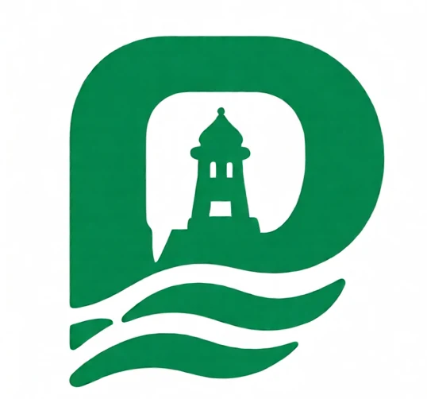

Civic reporting
Submit local issues with descriptions and evidence.
 Avens InteractiveINDEPENDENT APP STUDIO
Avens InteractiveINDEPENDENT APP STUDIOA community-focused app being developed for local information, civic issue reporting and public updates in Puducherry.
Under development · Not released
These features are planned and may change as development continues.
Submit local issues with descriptions and evidence.
Follow status updates and activity on submitted reports.
Explore local reports and community information.
See report locations and discover useful directions.
Planned experiences for citizens and authorized departments.
Language options designed for local accessibility.
PondyOne is not yet available on Google Play or the Apple App Store. Official links and a feature walkthrough will be added when it becomes available.
Explore everything we're building at Avens Interactive.